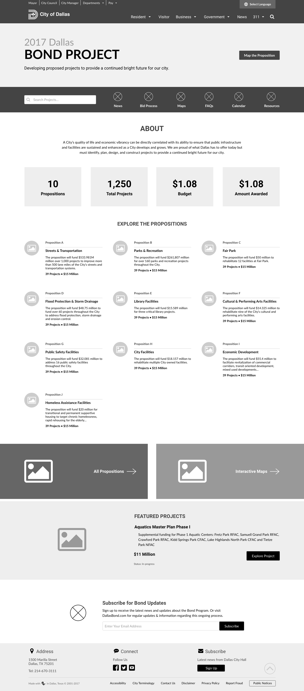
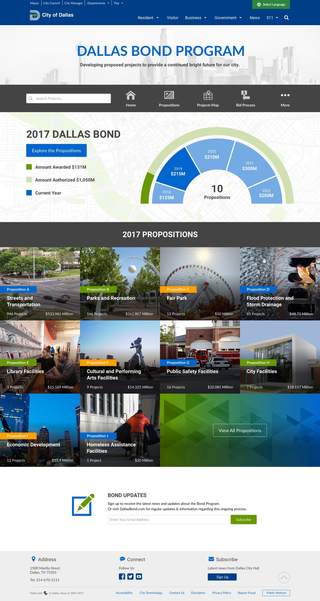

Dallas Bond Program
UI Design
Worked closely with the department stakeholders, product manager, UX designers and front end developers to build a landing page that provides accountability and transparency to the City of Dallas 2017 bond package by letting users track how and where Dallas is using the $1.05 billon in new bond projects.
Role: UI Designer
Programs: Sketch, Adobe XD, Illustrator & Photoshop
Year: 2017
Challenges: Create easy to understand charts and information for 10 Propositions with various numbers of projects ranging from 1 to 1000.
Project Outcome: The Dallas Bond website has served as means of accountability and transparency since it launched. It received local news attention and meets the ultimate goal of giving online access to users to track the 2017 Bond Program.
Client Provided 2017 Bond Presentation to City Council

Landing Page Wireframe
Landing Page Mockup
Project Detail Page Mockup